長期トレンド
JKMとJEPXシステムプライスの推移グラフ
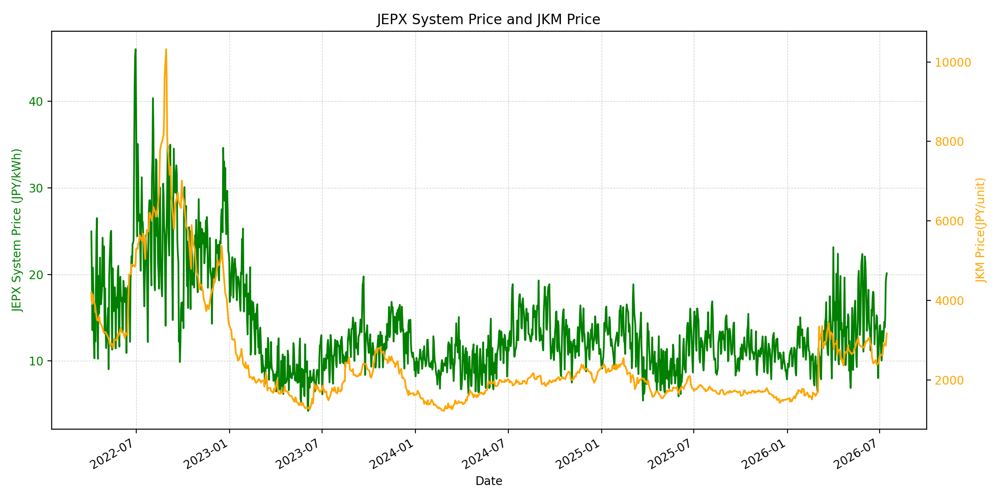
WTIの推移グラフ
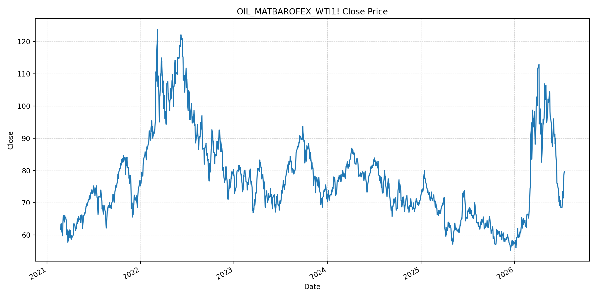
JEPXエリアプライスグラフ（直近一年分）
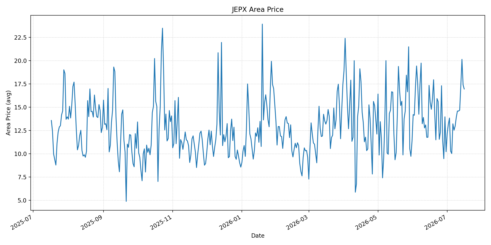
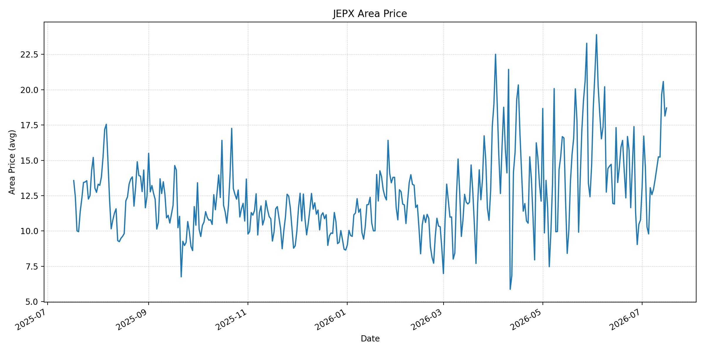
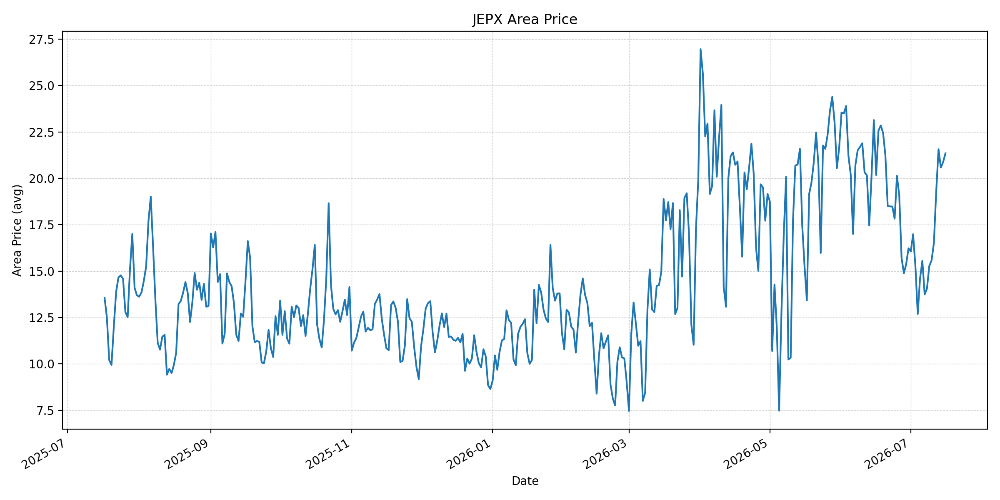
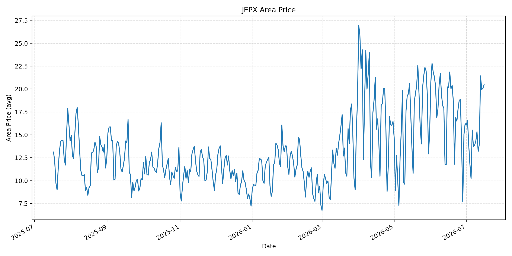
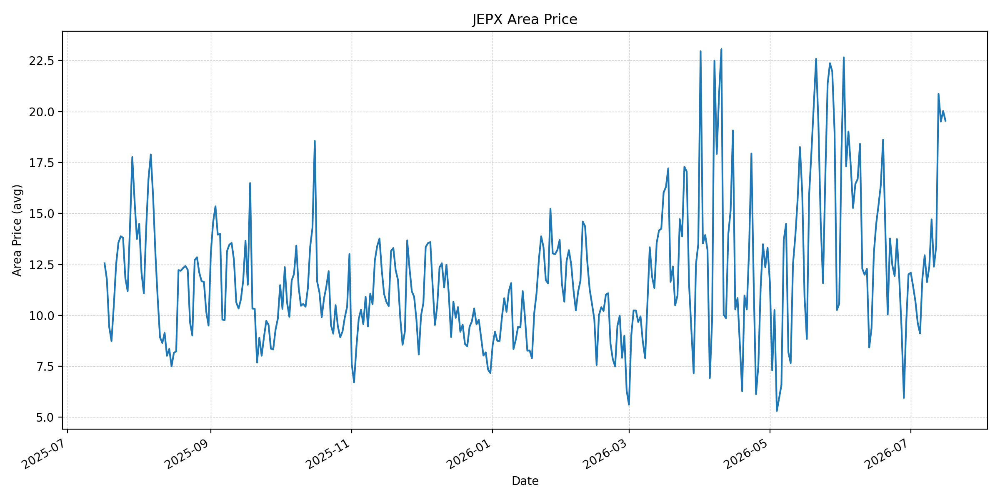
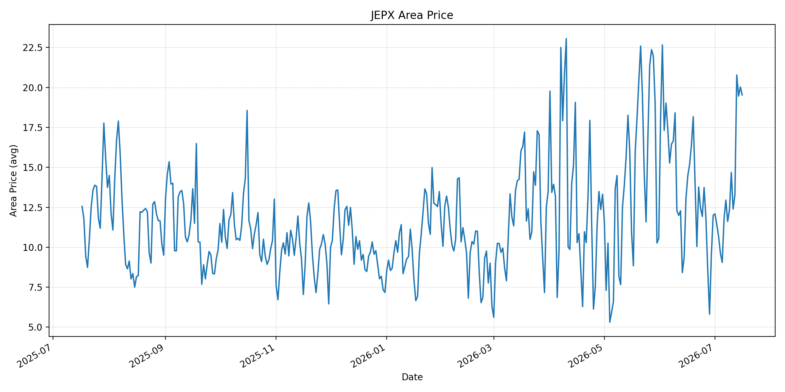
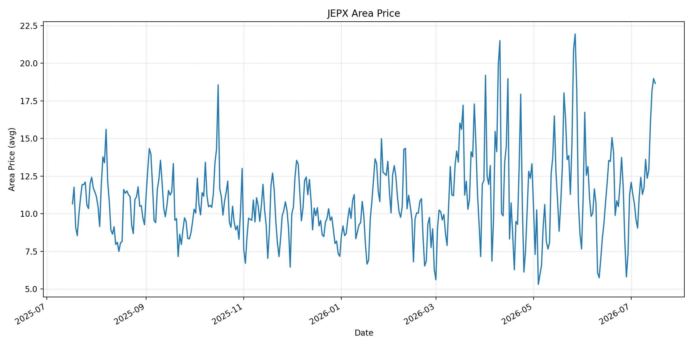
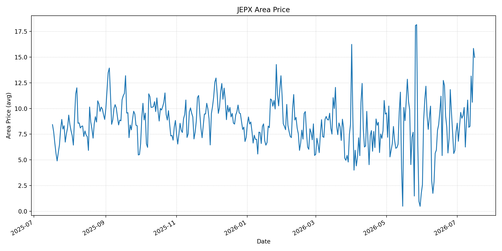
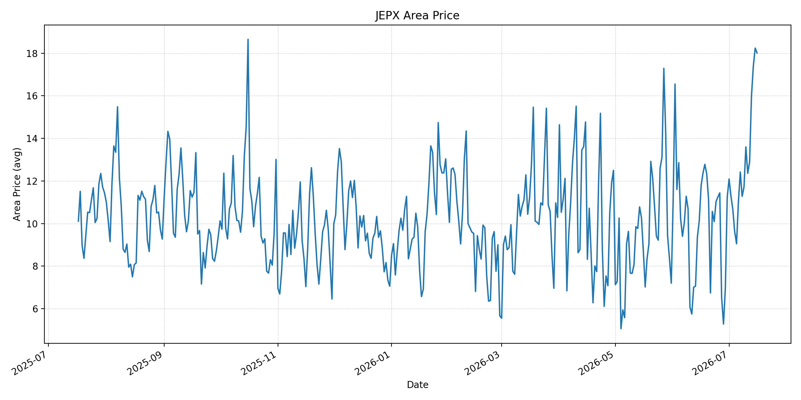
短期トレンド
JKMとJEPXシステムプライスの推移グラフ
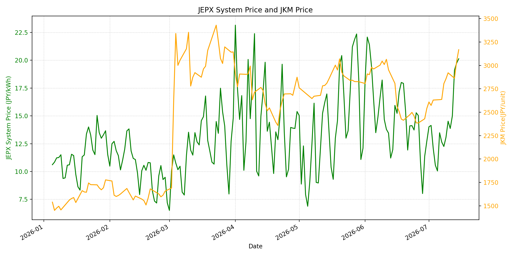
WTIの推移グラフ
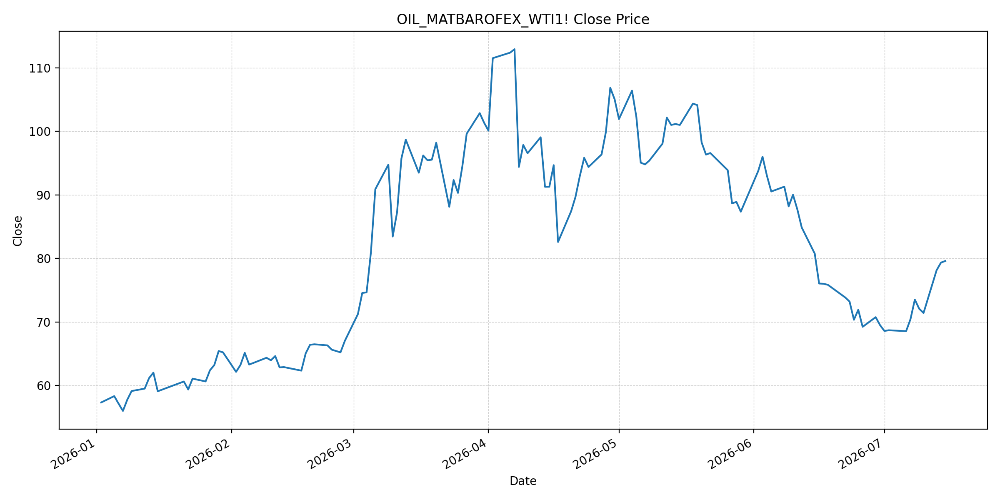
JEPXシステムプライス
JEPXは受渡日ベースの最新非空値で評価しています。最新値は 2026-07-16 分です。先週終値は 2026-07-09 時点の直近値、先月終値は 2026-06-30 時点の直近値で評価しています。
| エリア | 当日価格 | 前日価格 | 前日比（％） | 先週終値 | 先週比（％） | 先月終値 | 先月比（％） | 過去最高値 | 最高値比（％） |
|---|---|---|---|---|---|---|---|---|---|
| システム | 20.40 | 20.13 | 1.34 | 13.07 | 56.08 | 12.73 | 60.25 | 64.06 | -68.16 |
| 北海道 | 16.95 | 17.39 | -2.53 | 13.91 | 21.85 | 10.21 | 66.01 | 73.92 | -77.07 |
| 東北 | 18.71 | 18.14 | 3.14 | 13.66 | 36.97 | 10.78 | 73.56 | 84.92 | -77.97 |
| 東京 | 21.35 | 20.88 | 2.25 | 15.28 | 39.73 | 16.23 | 31.55 | 86.13 | -75.21 |
| 中部 | 20.47 | 20.07 | 1.99 | 14.29 | 43.25 | 16.23 | 26.12 | 52.06 | -60.68 |
| 北陸 | 19.55 | 20.03 | -2.40 | 12.38 | 57.92 | 12.01 | 62.78 | 46.48 | -57.94 |
| 関西 | 19.53 | 20.03 | -2.50 | 12.35 | 58.14 | 12.00 | 62.75 | 46.48 | -57.99 |
| 中国 | 18.66 | 18.98 | -1.69 | 11.72 | 59.22 | 11.26 | 65.72 | 46.48 | -59.86 |
| 四国 | 14.98 | 15.85 | -5.49 | 8.76 | 71.00 | 7.72 | 94.04 | 46.48 | -67.77 |
| 九州 | 18.01 | 18.24 | -1.26 | 11.72 | 53.67 | 11.24 | 60.23 | 40.54 | -55.58 |
LNG先物価格
最新値は 2026-07-15 の LNG(close) です。前日価格は直近非空値の 2026-07-14、先週終値は 2026-07-08 時点の直近値、先月終値は 2026-06-30 時点の直近値で評価しています。
| 当日価格 | 前日価格 | 前日比（％） | 先週終値 | 先週比（％） | 先月終値 | 先月比（％） | 過去最高値 | 最高値比（％） |
|---|---|---|---|---|---|---|---|---|
| 3168.00 | 3041.00 | 4.18 | 2805.00 | 12.94 | 2541.00 | 24.68 | 10319.00 | -69.30 |
石油先物価格
最新値は 2026-07-15 の OIL(close) です。前日価格は直近非空値の 2026-07-14、先週終値は 2026-07-08 時点の直近値、先月終値は 2026-06-30 時点の直近値で評価しています。
| 当日価格 | 前日価格 | 前日比（％） | 先週終値 | 先週比（％） | 先月終値 | 先月比（％） | 過去最高値 | 最高値比（％） |
|---|---|---|---|---|---|---|---|---|
| 79.60 | 79.34 | 0.33 | 73.52 | 8.27 | 69.50 | 14.53 | 123.70 | -35.65 |
ニュース
イラン情勢に関するニュース
- 2026年7月15日、APは、米国がイランへの海上封鎖を再開し、イランの船舶攻撃への報復として空爆を強めたと報じました。暫定合意下の交渉は停滞し、革命防衛隊は封鎖が続けば中東全域のエネルギー輸出停止に踏み込むと威嚇しています。 参照: AP, 2026-07-15
- Guardianのライブ報道では、米軍がバンダルアッバース、チャーバハール、アフヴァーズ周辺を含むイランの軍事能力を標的に追加攻撃を行い、イラン側では南部攻撃で30人超の死者と260人超の負傷者が出たとされています。イラン交渉担当者は、合意から利益を得られないなら遵守する理由はないと述べました。 参照: Guardian, 2026-07-15
ホルムズ海峡経由の石油・LNGに関するニュース
- APは、平時には世界の石油・天然ガス取引の約5分の1がホルムズ海峡を通過すると整理し、イランが米軍監視下のオマーン側航路を使う船舶も攻撃したことで、海峡再開の軍事的ハードルが高まっていると報じました。専門家は、完全な安全確保には大規模な米軍艦艇投入や地上兵力が必要になり得ると見ています。 参照: AP, 2026-07-15
- MarketWatchは、米国の追加攻撃と封鎖再開を受け、時間外取引でBrentが85.93ドル、WTIが80.56ドルに上昇したと報じました。WSJも、20％通航料案の撤回後も封鎖と船舶攻撃が残り、WTIが79.60ドル近辺で推移したと伝えています。 参照: MarketWatch, 2026-07-15 / WSJ, 2026-07-15
ホルムズ海峡経由でない石油・LNGに関するニュース
- 過去24時間で、非ホルムズの新規増産、代替パイプライン、または非ホルムズLNG供給を直接改善する強い新規記事は確認できませんでした。市場材料は、封鎖再開、船舶攻撃、ホルムズ周辺の軍事衝突に集中しています。
- MarketWatchは、今回の供給ショックでは従来より緊急在庫・余剰供給の緩衝力が小さいとの見方を紹介しています。非ホルムズ供給が即時に増える材料が乏しいため、ホルムズ情勢の悪化が油価・LNG価格に波及しやすい構図です。 参照: MarketWatch, 2026-07-15
日本国内のイラン戦争に関係するニュース
- 過去24時間で、JEPX制度、国内電力需給ルール、または日本政府のイラン戦争関連対策を直接変更する主要な新規公表は確認できませんでした。
- 関連する国内材料として、経済産業省は2026年5月20日、2026年度夏季は全エリアで安定供給に最低限必要な予備率3％を確保できるため節電要請を実施しないと発表しています。一方で、国際情勢の変化、異常気象、火力発電所の集中はリスクとして明記されています。 参照: 経済産業省, 2026-05-20
インサイト
ニュース事項による日本の電力市場への影響（短期：数日〜1週間）
- JEPXシステムプライスは 20.40 円/kWhで前日比 1.34%、先週比 56.08% と高止まりしています。東京 21.35 円/kWh、中部 20.47 円/kWhが上昇しており、米国の封鎖再開とイランのエネルギー輸出停止威嚇は、数日〜1週間の燃料リスクプレミアムを維持する材料です。
- OILは 79.60 で前回非空値比 0.33%、先週比 8.27%、LNGは 3168.00 で前回非空値比 4.18%、先週比 12.94% です。MarketWatchが報じた時間外のWTI 80ドル台回復は、翌日以降の燃料費見通しをさらに押し上げます。
- 北海道、関西、中国、四国、九州は前日比で下落しましたが、全エリアで先週比は2桁上昇です。局地的な需給・再エネ要因で日次価格は揺れても、ホルムズ周辺の船舶攻撃と封鎖が続く限り、全国平均の下値は限定的です。
ニュース事項による日本の電力市場への影響（長期：1ヶ月〜半年）
- APが指摘する通り、ホルムズ海峡の完全な安全確保には大規模な軍事負担が必要になり得ます。短期の通航再開が進んでも、LNGは先月比 24.68%、OILは 14.53% 上昇しており、輸送・保険・調達先分散コストは1ヶ月〜半年残りやすいです。
- JEPXシステム価格は先月比 60.25%、東京は 31.55%、関西は 62.75% 上昇しています。METIは夏季の節電要請なしとしていますが、国際情勢と火力発電所集中をリスクに挙げており、燃料調達が不安定なら予備率があっても価格ボラティリティは残ります。
- OILは過去最高値比 -35.65%、LNGは -69.30% と歴史的高値からはなお低位です。ただし、緊急在庫・余剰供給の緩衝力が薄いとの見方が強まる中では、ホルムズの断続的な混乱だけでも日本の火力燃料コストを中期的に押し上げる可能性があります。